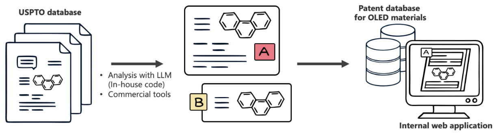
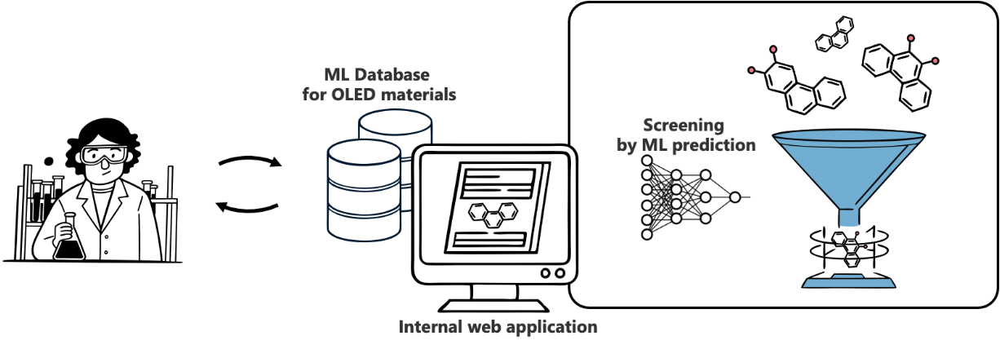
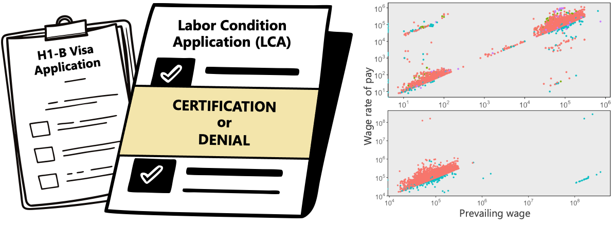

About Me
Hi, I'm Sohae Kim. I'm currently seeking a career opportunity in machine learning and data science near Arlington, VA or remote, which is one of the main reasons why I created this website.
I'm a Staff Engineer at Samsung Display, currently on leave to support my family relocated in the United States. At Samsung Display, I led the development of ML-based systems for materials discovery and patent analysis. My responsibilities at Samsung Display were equivalent to those of a Research Scientist or Data Scientist in the current US industry. I am open to similar positions as well as Machine Learning Engineer.
Before Samsung Display, I investigated nanoscale interface of semiconductors computationally in the department of Mechanical Engineering at MIT for my PhD and studied Mechanical Engineering at KAIST for my master's and bachelor's degrees. I have always been intrigued by computational approaches to solve problems in science and engineering and enjoy learning new technologies and applying them to solve problems.
I would be happy to chat about my projects and experiences. Please feel free to contact me.
Projects
NLP-Powered Analysis of Patents for OLED Materials

View AbstractProject Overview
Led the execution and delivery of an MVP system that processes and analyzes USPTO data. The system combines NLP and cheminformatics to help researchers understand the current state of the art and new research opportunities in OLED materials, while supporting decision-makers in understanding the competitive landscape.
Key Impact & Achievements
- Created a comprehensive OLED materials patent database of 10+ years that processes both molecular structures and patent claims.
- Implemented advanced NLP models to analyze patent claims and discover similar patents.
- Successfully presented the system at IMID 2023. View Abstract
Technical Details
- Utilized PatentSBERTa, an NLP model based on Sentence-BERT and RoBERTa.
- Implemented t-SNE mapping for visualization of patent similarity based on embedding vectors.
- Developed custom processing pipeline for handling various patent file formats including XML, TIF images, MDL molfiles, and ChemDraw CDX files.
- Created an automated system for converting molecular structure information to SMILES strings using ChemAxon software and in-house code.
ML-Assisted Materials Discovery for OLED

Project Overview
Led the development and deployment of ML-assisted systems for OLED materials discovery. This platform combines ML-based property prediction with systematic validation frameworks to accelerate materials discovery process. Traditional discovery of promising OLED molecules relies heavily on researchers' existing knowledge, limiting their ability to navigate through billions of potential molecular candidates. With this system, researchers could quickly identify promising candidates, receive recommendations for similar molecules, and significantly reduce experimental costs. I advanced the maturity of ML models for property prediction and led the development and deployment of various modules including the high-throughput screening system and recommendation system.
Key Impact & Achievements
- Transformed materials discovery efficiency:
- Increased the precision in identifying viable OLED materials from 22% to 48% through ML-based screening.
- Further improved precision to 66% with advanced ML-predictability criteria.
- Enabled systematic exploration of 1.5M+ candidate molecules per structure type.
- Advanced technical excellence:
- Developed highly accurate ML models achieving RMSE values as low as 0.025eV for key molecular properties.
- Created novel ML-predictability scale for quantitative reliability assessment.
- Deployed system on internal web platform for organization-wide access.
- Demonstrated research leadership:
- Published findings in industry proceedings and presented at technical conferences. View Paper View Slides
- Established framework for continuous ML model improvement through iterative database expansion.
Technical Details
- Developed ensemble ML models combining linear, non-linear, and artificial neural network approaches using Scikit-learn and Keras.
- Implemented comprehensive property prediction for multiple electronic states including HOMO, LUMO, triplet states ( T₁, ³MLCT, ³MC) for phosphors, and singlet/triplet excited states for TADF materials.
- Achieved exceptional prediction accuracy with average RMSEs of 0.025-0.043eV for key electronic properties.
- Utilized hyperparameter optimization techniques including random search and Bayesian optimization.
- Implemented t-SNE mapping for visualization of chemical space and similarity analysis.
- Created automated validation pipelines integrating ML predictions with DFT calculations for final verification.
Data Mining and Predictive Modeling for LCA Outcome

View ReportProject Overview
Developed predictive models for labor condition application (LCA) certification outcomes - a prerequisite first step in the United States professional work visa petition process including those for H-1B, H-1B1, and E-3 visas. This data mining project aimed to help visa applicants, sponsoring companies, and immigration lawyers better understand certification likelihood and key success factors. By analyzing data from the United States DOLETA's OFLC website, the project created predictive models to assess LCA applications before submission and identified crucial factors influencing certification decisions. Received an A+ grade for the final and an A grade overall.
Key Takeaways
- Through data processing and exploration, discovered critical application requirements:
- Wage units must be consistent between proposed and prevailing wage fields.
- Proposed wage rate must meet or exceed the prevailing wage for certification consideration.
- Classification tree analysis revealed several factors that increase certification
likelihood:
- H-1B dependent employer status.
- Presence of agent representing employer.
- Use of OES (Occupational Employment Statistics) as prevailing wage source.
- Higher frequency of applications from the employer.
- Model Performance:
- Classification trees achieved best accuracy (75-77%) on balanced datasets.
- Outperformed baseline models and other machine learning approaches.
- Demonstrated effective prediction capability while maintaining interpretability.
- Data Processing Insights:
- Working directly with raw DOLETA data revealed crucial insights not available in pre-processed datasets.
- Hands-on data cleaning exposed nuanced patterns in wage reporting and application preparation.
- Direct processing of source data enabled discovery of subtle relationships between certification success and application quality.
Technical Details
- Data Processing & Engineering:
- Developed robust preprocessing pipeline for wage normalization and unit standardization.
- Created two approaches for categorical variables: dummy encoding and frequency-based transformation.
- Implemented systematic outlier detection and handling procedures.
- Model Development:
- Implemented four classification methods: decision trees, logistic regression, k-NN, and neural networks.
- Used 50/25/25 split for training, validation, and testing with cross-validation.
- Created both balanced and unbalanced dataset approaches to handle class imbalance.
- Evaluation Framework:
- Developed two baseline models: all-certified prediction and wage-based rules.
- Created comprehensive evaluation metrics comparing model performance.
- Implemented detailed error analysis to understand prediction failures.
- Tech Stack:
- R programming with rpart, neuralnet, caret libraries.
- Custom functions for data processing and model evaluation.
- Statistical analysis tools for result validation.
Experience
I've built my career at the intersection of machine learning, computational science, and materials discovery. With over 4 years leading ML/AI initiatives in industry settings, I've consistently delivered solutions that accelerate research processes, reduce costs, and drive innovation in materials science.
Staff Engineer (ML/AI Focus)
ML-Assisted Materials Discovery Platform
- Led development and deployment of ML platform that can increase viable OLED materials identification precision from 22% to 66%.
- Developed highly accurate ML prediction models (RMSE 0.025-0.043eV) for critical electronic properties.
- Investigated a measurement to quantitatively assess prediction reliability before ML inference, which became a standard evaluation method within the research team.
- Enabled researchers to screen 1.5M+ molecular candidates without costly lab experiments.
- Published and presented findings at SID Display Week 2021. view paper view slide
NLP-Powered Patent Analysis System
- Led the execution and delivery of an MVP system that processes and analyzes 10+ years of USPTO data for research and business strategy.
- Created the company's first comprehensive OLED materials patent database combining patent claim analysis with molecular structure extraction.
- Implemented advanced NLP models (PatentSBERTa) to analyze patent claims and detect similar patents.
- Collaborated with Software Engineers to implement ETL pipeline for handling various patent file formats.
- Successfully presented the system at IMID 2023. view abstract
Graduate Research Assistant
- Led computational research on nanoscale heterojunctions of transition metal oxide and silicon for efficient water splitting using DFT calculations.
- Gained extensive experience in scientific computing, data analysis, and statistical modeling while developing skills in Python programming.
Graduate Research Assistant
- Performed computational fluid dynamics simulations to study interaction of two flexible flags in tandem.
Education
University of Colorado Boulder
- Focus on Artificial Intelligence and Data Science
- Part-time, online program while actively seeking employment
Massachusetts Institute of Technology
- Fulbright Scholar (2011-2013)
- Research focus: Computational modeling of nanoscale materials
- Coursework relevant to ML, DS and Statistics:
Data Mining, Introduction to Deep Learning, Statistical Consulting, Applied Quantum and Statistical Physics, Managerial Finance I
Korea Advanced Institute of Science and Technology
- Research focus: Computational fluid dynamics
- Graduated Summa Cum Laude
Skills
Machine Learning
- Supervised/Unsupervised Learning
- Deep Learning
- Natural Language Processing
- Model Validation
ML Frameworks
- TensorFlow
- PyTorch
- scikit-learn
- XGBoost
- HuggingFace
- Transformers
- LangChain
Programming
- Python (primary)
- SQL
- R
- Git version control
- MATLAB
- C++
Cloud Computing
- AWS Certified ML Engineer - Associate
- Experience with high-performance computing environments